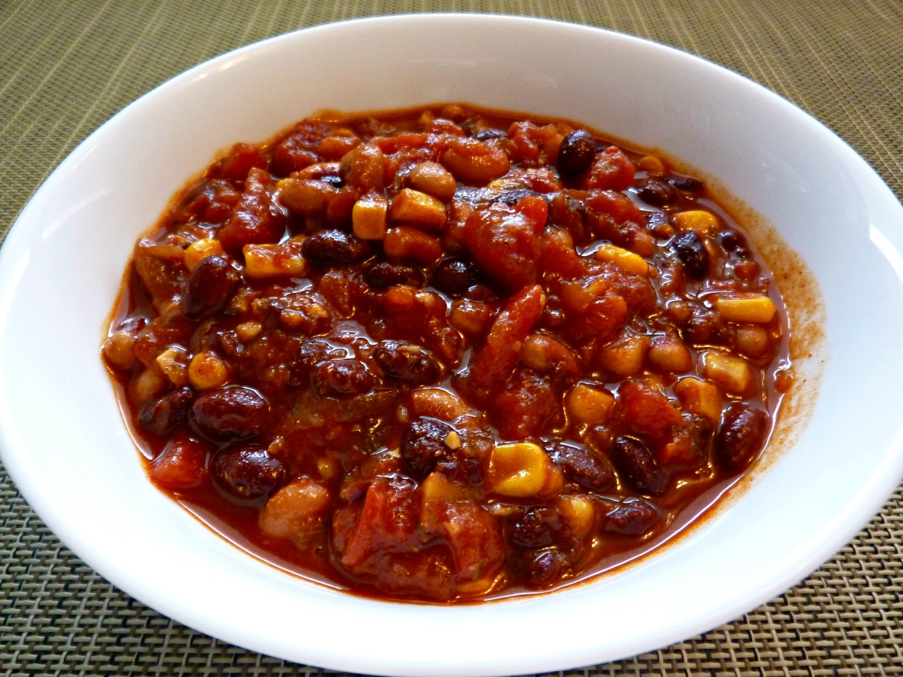

Total time:
1 hour
15 mins
Ingredients:
- 1 tablespoon olive oil1/2 medium onion ,chopped
- 2 bay leaves
- 1 teaspoon ground cumin
- 2 tablespoons dried oregano
- 1 tablespoon salt2 stalks celery, chopped
- 2 green bell peppers, chopped2 jalapeno peppers, chopped
- 3 cloves garlic, chopped
- 2 (4 ounce) cans chopped green chile peppers, drained
- 3 (28 ounce) cans whole peeled tomatoes, crushed
- 1/4 cup chili powder1 tablespoon ground black pepper
- 1 (15 ounce) can kidney beans, drained
- 1 (15 ounce) can garbanzo beans, drained
- 1 (15 ounce) can black beans
- 1 (15 ounce) can whole kernel corn
Directions:
- Heat the olive oil in a large pot over medium heat.
- Stir in the onion, and season with bay leaves, cumin, oregano, and salt.
- Cook and stir until onion is tender, then mix in the celery, green bell peppers, jalapeno peppers, garlic, and green chile peppers.
- When vegetables are heated through, mix in the vegetarian burger crumbles. Reduce heat to low, cover pot, and simmer 5 minutes.
- Mix the tomatoes into the pot.
- Season chili with chili powder and pepper. Stir in the kidney beans, garbanzo beans, and black beans. Bring to a boil, reduce heat to low,
and simmer 45 minutes.
- Stir in the corn, and continue cooking 5 minutes before serving.